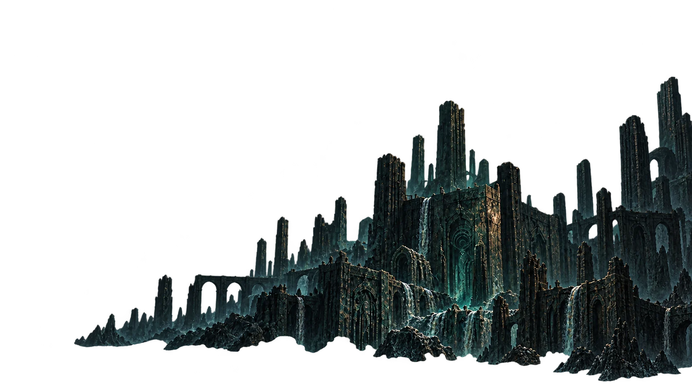
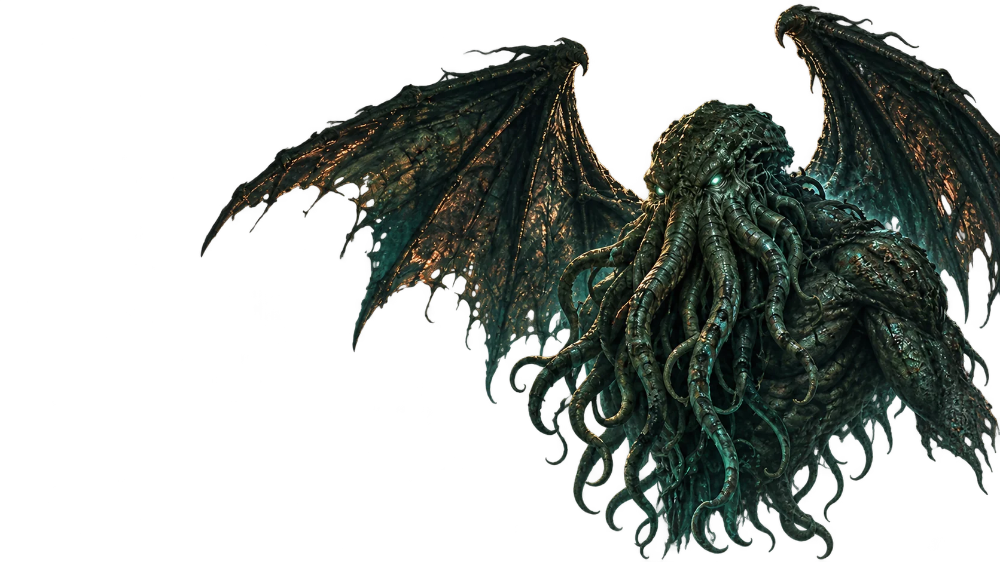
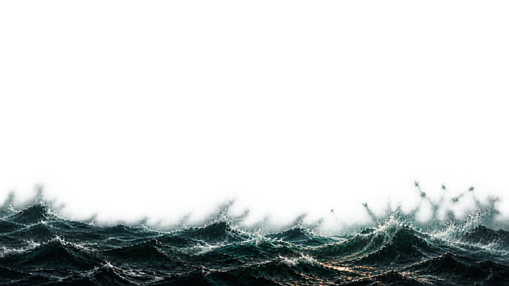
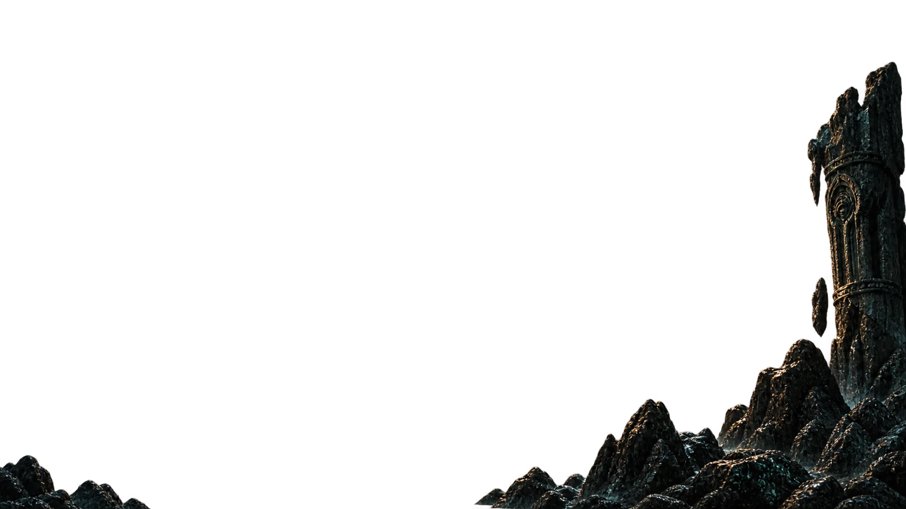
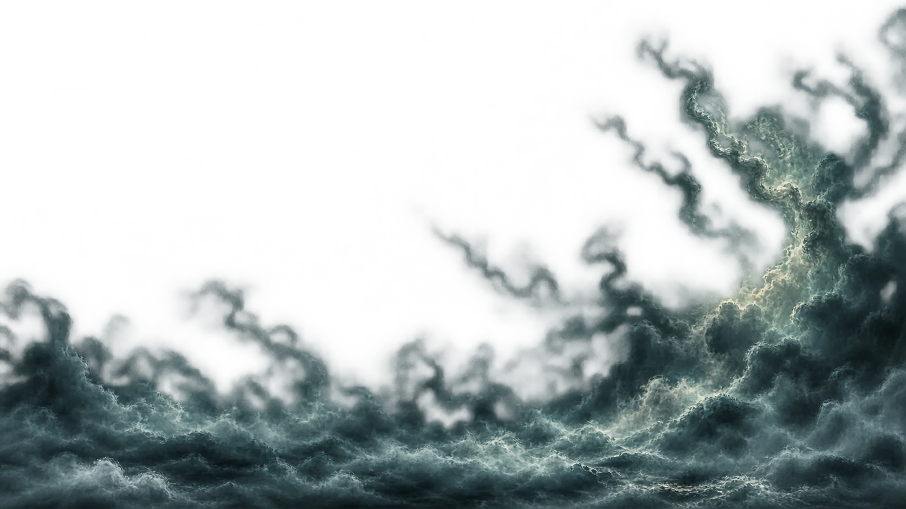
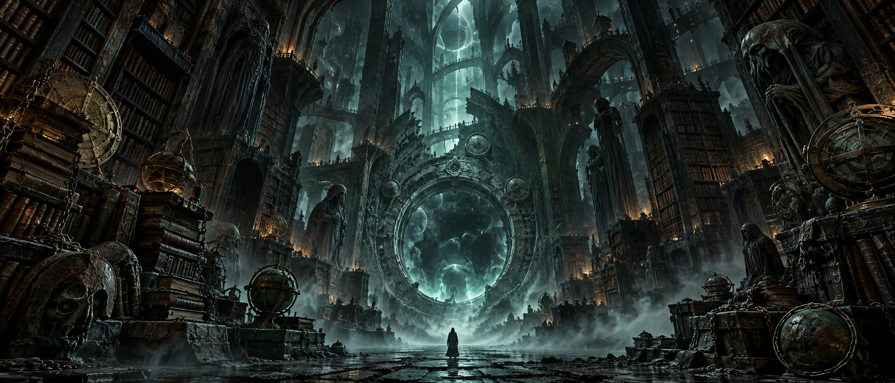
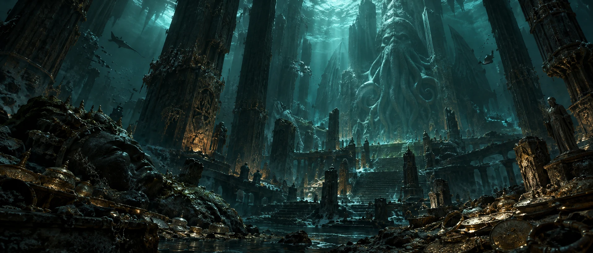
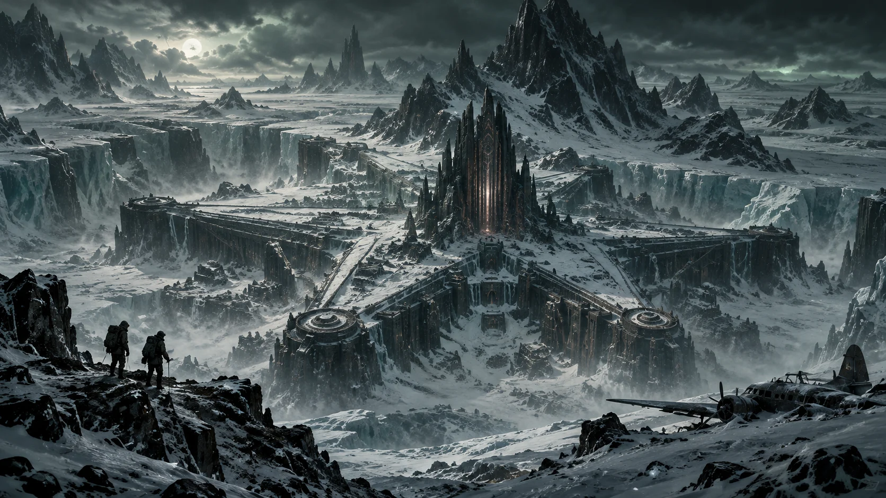

Le bestiaire de H. P. Lovecraft
Les archives
du Voile.
Il existe des choses que l’on ne devrait pas nommer.
Et pourtant, vous êtes ici.
XXX présences · Une infinité de mystères
01 / Inventaire de l’inconnu
Ce qui dort
ne disparaît pas.
Entités cosmiques, voyageurs d’autres mondes, créatures des profondeurs. Chaque dossier est une porte entrouverte sur l’univers de Lovecraft.
Aucune présence à ce seuil.
Votre parcours
Le premier dossier vous attend.
02 / Cabinet des choses impossibles
Elles n’auraient
pas dû revenir.
Cinq objets. Cinq fragments d’une histoire que personne n’a accepté de terminer. Touchez une relique. Écoutez ce qu’elle garde.
Cabinet imaginaire · fragments de création
0 / 5 reliques examinées
Vision I · La chambre des seuils
Il n’y a pas
de fond.
Les rayonnages continuent au-delà du regard.
Une porte s’ouvre là où aucun mur n’a été bâti.
Note de l’archiviste · texte original
Nous appelons « mystère »
ce qui n’a pas encore
remarqué notre présence.

Vision II · Sous la dernière marée
Vous n’êtes plus
au-dessus.
La pression augmente. Les colonnes se penchent.
Ce que vous prenez pour une statue respire.

Vision III · L’expédition interdite
Les Montagnes
hallucinées.
Au-delà des glaces, une cité précède l’humanité.
Plus bas, quelque chose apprend à imiter une voix.
03 / À la source des ténèbres
Avant le mythe,
il y eut les récits.
Retrouvez les textes qui donnent vie à ces présences.
Les dates indiquent leur première publication.
À propos de ces archives
Ce portail est une création indépendante consacrée à l’univers fictionnel de H. P. Lovecraft. Les notices sont des synthèses originales, avec des liens vers les textes du H. P. Lovecraft Archive. Les regroupements « Entités » et « Créatures » servent à la navigation et ne prétendent pas établir une cosmologie officielle.
Les illustrations de créatures, de reliques et de lieux sont des interprétations artistiques originales générées avec l’IA. Le cabinet des reliques, les fragments, les visions et les murmures sont des créations fictives de ce portail, pas des éléments présentés comme documentés dans les récits de Lovecraft. Les notes de l’archiviste sont des textes de création, pas des citations de Lovecraft. Vos sceaux, dossiers explorés, notes, reliques examinées et réglages d’effets sont conservés dans ce navigateur, si celui-ci autorise le stockage local. Les sources externes nécessitent une connexion ; le portail fonctionne hors ligne.
Consulter la bibliographie des premières publications ↗